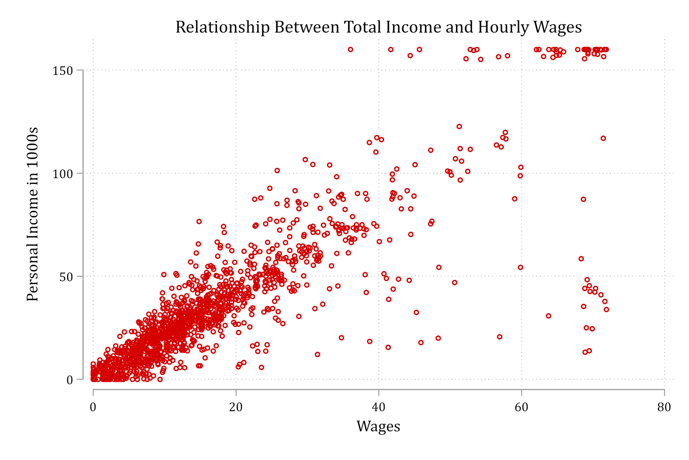
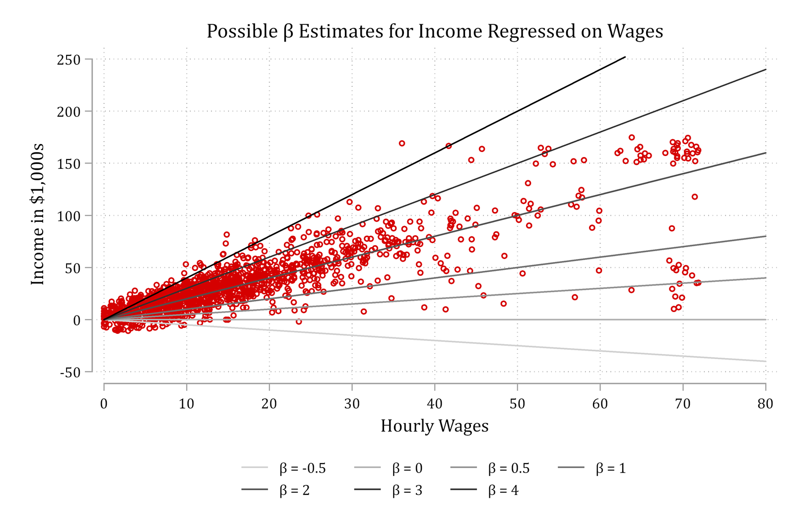
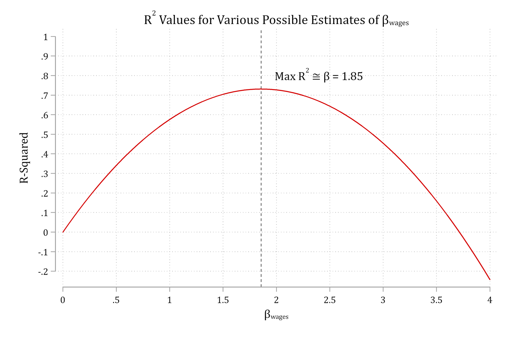
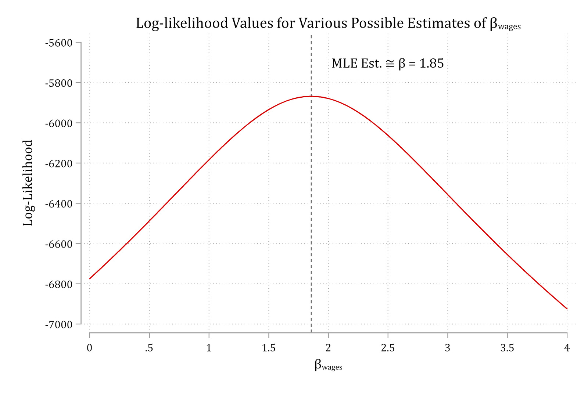
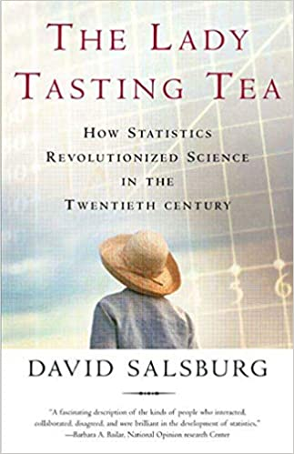

We cannot use OLS to obtain logit/probit model estimates*
Instead, we use maximum likelihood estimation (MLE or just ML)
ML finds estimates that maximize the likelihood of what is observed in the data
No other values of the parameters increase your chance of observing your data
That is, the parameter estimates that do the best job of describing the relationships in the data
For linear regression, OLS estimates are the same as ML estimates**
For the rest of the models we cover in this class, we do not have a neat closed-form mathematical solution like OLS and instead rely on MLE to obtain our parameter estimates
*But see a potential logit/OLS solution proposed by Allison 2020
**For details on hypothesis testing / standard error estimation, see Appendix 3B
Graphical view of ML estimation in linear regression

If you had to guess, what value of β would you choose?
I.e., What β would best fit the relationship observed in the data?
Maximum likelihood estimation (MLE)

MLE auditions various parameter estimates (β here) and then compares measures of model fit to determine the β that best fits the patterns in the data

For linear regression, we can calculate an R2 from models auditioning various possible β estimates. Top of the curve = β that produces the largest R2
MLE: maximize the log-likelihood
For most models, cannot calculate a straightforward R2 to measure model fit
Instead, we rely on maximizing the log-likelihood, which represents overall model fit on a single dimension—similar to R2
Goal of MLE: find what value of the parameters (e.g. β’s and α) that produce the largest log-likelihood value (i.e., that maximize the model fit)

Comparing OLS and ML estimates
The example above of income regressed on wages showed that β ≈1.85 was the parameter value that produced the largest R2 as well as the largest log-likelihood
Compare the linear regression results below from regress (OLS) and gsem (MLE)
library(haven) # import Stata data and labelslibrary(dplyr) # data manipulationlibrary(sjmisc) # frequency tablesgss <-read_dta("https://tdmize.github.io/data/data/gss.dta")gss <- gss |>filter(year ==2016)# Check OLS estimate of betasummary(lm(income ~ wages, data = gss))
Call:
lm(formula = income ~ wages, data = gss)
Residuals:
Min 1Q Median 3Q Max
-117.968 -3.616 -1.072 4.199 89.825
Coefficients:
Estimate Std. Error t value Pr(>|t|)
(Intercept) 3.40814 0.70322 4.846 1.4e-06 ***
wages 1.85696 0.03034 61.204 < 2e-16 ***
---
Signif. codes: 0 '***' 0.001 '**' 0.01 '*' 0.05 '.' 0.1 ' ' 1
Residual standard error: 17.07 on 1377 degrees of freedom
(1488 observations deleted due to missingness)
Multiple R-squared: 0.7312, Adjusted R-squared: 0.731
F-statistic: 3746 on 1 and 1377 DF, p-value: < 2.2e-16
# Check MLE estimate of betamlmod <-glm(income ~ wages, family = gaussian, data = gss)summary(mlmod)
Call:
glm(formula = income ~ wages, family = gaussian, data = gss)
Coefficients:
Estimate Std. Error t value Pr(>|t|)
(Intercept) 3.40814 0.70322 4.846 1.4e-06 ***
wages 1.85696 0.03034 61.204 < 2e-16 ***
---
Signif. codes: 0 '***' 0.001 '**' 0.01 '*' 0.05 '.' 0.1 ' ' 1
(Dispersion parameter for gaussian family taken to be 291.3764)
Null deviance: 1492702 on 1378 degrees of freedom
Residual deviance: 401225 on 1377 degrees of freedom
(1488 observations deleted due to missingness)
AIC: 11743
Number of Fisher Scoring iterations: 2
logLik(mlmod)
'log Lik.' -5868.363 (df=3)
When is the N large enough to justify MLE?
ML estimates are consistent, normal, and efficient… in infinitely large samples
But, also perform well in moderately large samples
anes <-read_dta("https://tdmize.github.io/data/data/cda_anes.dta")# Drop any missing data on the IVs used earlier in the sectionanes <- anes[complete.cases(anes[c("age", "hhincome", "woman", "lgb", "race4","edyrs", "relimport", "wrongtrack")]), ]ppmod <-glm(vote_trump ~as_factor(polviews7) *as_factor(partyid),family =binomial(link ="logit"), data = anes)
We receive an error message and some observations are excluded from the model
What is the issue? Let’s examine the 30 observations dropped
Voting for Trump (vote_trump) <numeric>
# total N=32 valid N=30 mean=0.00 sd=0.00
Value | Label | N | Raw % | Valid % | Cum. %
------------------------------------------------------------
0 | Not voting for Trump | 30 | 93.75 | 100 | 100
1 | Voting for Trump | 0 | 0.00 | 0 | 100
<NA> | <NA> | 2 | 6.25 | <NA> | <NA>
polviews7 = 1 are “extremely liberal”
partyid = 2 are “Democrats”
Everyone in this category reports they are not voting for Trump. I.e., There is no variation in this category
The odds of not voting for Trump for extremely liberal Democrats are 30/0, which is undefined
Exact estimation for small samples
Maximum likelihood can be biased in small samples and cannot estimate parameters when there is “perfect prediction”
Exact logistic regression (exlogistic in Stata; elrm in R) computes exact estimates in small samples but is computationally intensive
Small samples are not an issue
Perfect prediction is not an issue
R.A. Fisher devised exact tests when Muriel Bristol claimed she could detect whether tea or milk was added first to her cup. He asked her to taste 8 cups of tea, 4 with tea added first and 4 with milk first, and decide whether milk or tea was added first. He had to figure out how to perform a test with so few observations. Essentially, he counted every possible outcome

Firth’s penalized maximum likelihood estimation
Exact logistic methods work well but are very computationally intensive
In addition, it is difficult to interpret anything other than the coefficients
E.g., Predicted probabilities and marginal effects (MEs) are difficult to obtain with current software
An alternative is Firth’s penalized maximum likelihood (PML) estimation
Rainey and McCaskey (2021) show that in small samples, PML produces better coefficient and SE estimates than normal MLE
Rainey 2024 provides additional details for obtaining unbiased significance tests even in the case of perfect prediction
In Stata, the user-written command firthlogit implements the PML estimator; in R, logistf